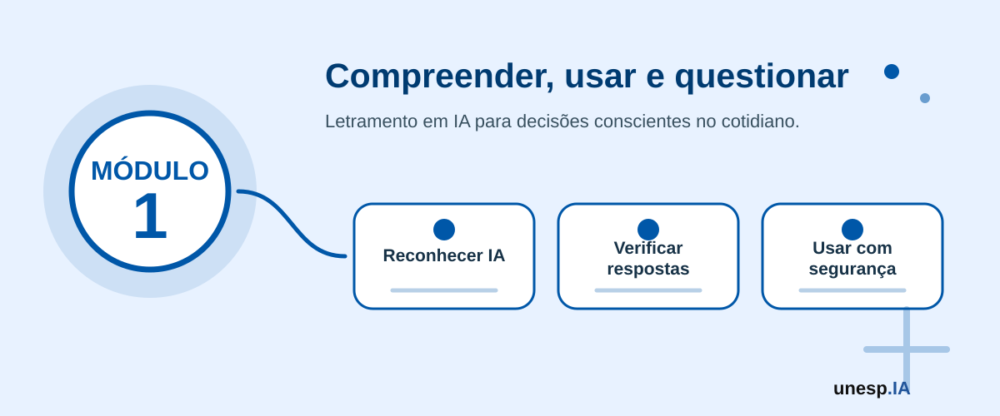

Fundamentos e Letramento em Inteligência Artificial
Ferramentas relacionadas neste módulo

Apresentação
A Inteligência Artificial deixou de ser uma tecnologia distante, restrita a filmes de ficção científica, laboratórios de pesquisa ou grandes empresas de tecnologia. Hoje, ela está presente no celular, nas redes sociais, nos bancos digitais, nos aplicativos de transporte, nas plataformas de vídeo, nos serviços públicos, na educação, nos negócios e até nas pequenas tarefas do cotidiano.
Quando uma pessoa desbloqueia o celular com reconhecimento facial, recebe uma sugestão de vídeo, usa o GPS para fugir do trânsito, conversa com um assistente virtual, recebe alerta de compra suspeita ou pede ajuda para escrever uma mensagem, ela pode estar utilizando algum recurso baseado em Inteligência Artificial.
Este módulo tem como objetivo apresentar os conceitos fundamentais da IA de forma simples, prática e acessível. O foco não é formar especialistas nem ensinar programação neste primeiro momento. O objetivo é desenvolver letramento em Inteligência Artificial, ou seja, a capacidade de compreender, utilizar, questionar e avaliar a IA de forma crítica, segura, ética e responsável.
O que significa letramento em IA?
Neste módulo, letramento em Inteligência Artificial significa aprender a reconhecer onde a IA aparece, entender seus limites, formular bons prompts, interpretar respostas com senso crítico e decidir quando a tecnologia ajuda ou quando exige cuidado humano.
- perguntar de onde vêm os dados e quais vieses podem aparecer;
- comparar respostas da IA com fontes confiáveis;
- proteger dados pessoais e respeitar direitos de outras pessoas;
- usar ferramentas como apoio para aprender, criar e resolver problemas, sem abrir mão da responsabilidade humana.
1. Organização do Módulo
Carga horária total
10 horas.
Público recomendado
Cidadãos em geral, idosos, jovens, adultos, trabalhadores, estudantes, professores e participantes iniciantes, sem necessidade de conhecimento prévio em tecnologia.
Objetivo geral
Apresentar os conceitos fundamentais da Inteligência Artificial, suas principais áreas, aplicações reais, benefícios, limitações, riscos e formas de uso seguro, ético e responsável, introduzindo também noções iniciais de IA generativa e engenharia de prompt (instrução para a IA).
Competências desenvolvidas
Ao final do módulo, espera-se que o participante seja capaz de:
- compreender o que é Inteligência Artificial;
- reconhecer aplicações de IA no cotidiano;
- diferenciar IA, Machine Learning (Aprendizado de Máquina), Deep Learning (Aprendizado Profundo) e IA Generativa;
- compreender a relação entre dados, algoritmos, modelos e aprendizagem;
- identificar aplicações reais em educação, trabalho, negócios, saúde, serviços públicos e vida pessoal;
- utilizar ferramentas básicas de IA generativa;
- elaborar prompts simples e contextualizados;
- reconhecer limites das respostas geradas por IA;
- identificar riscos como fake news (notícias falsas), deepfakes (conteúdos sintéticos falsificados), golpes digitais, vieses, alucinações e exposição de dados pessoais;
- adotar cuidados básicos relacionados à segurança, privacidade e LGPD;
- construir um mapa visual sobre a presença da IA no cotidiano.
2. Estrutura das Unidades
| Unidade | Tema | Carga horária |
|---|---|---|
| Unidade 1.1 | O que é IA e por que ela importa? | 1h30 |
| Unidade 1.2 | Como a IA aprende: dados, algoritmos e modelos | 1h30 |
| Unidade 1.3 | Principais áreas da Inteligência Artificial | 1h30 |
| Unidade 1.4 | IA no cotidiano: aplicações reais e impactos | 1h30 |
| Unidade 1.5 | Primeiros usos com ferramentas de IA e prompts | 2h |
| Unidade 1.6 | Segurança, ética, privacidade e LGPD | 1h |
| Unidade 1.7 | Laboratório integrador | 1h |
| Total | 10h |
A sequência pedagógica segue a lógica:
conceito → funcionamento → áreas → aplicações → uso prático → riscos → produto final
Unidade 1.1 – O que é IA e por que ela importa?
Carga horária
1h30
Objetivo da unidade
Compreender o conceito de Inteligência Artificial, diferenciar IA de inteligência humana e reconhecer por que essa tecnologia se tornou importante na sociedade atual.
Situação de abertura
Dona Maria desbloqueia o celular usando o rosto.
João abre o YouTube e percebe que os vídeos recomendados parecem feitos exatamente para ele.
Ana usa o Waze para evitar congestionamento.
Carlos recebe um alerta do banco sobre uma compra suspeita.
Uma professora pede ajuda a uma IA para criar exemplos para uma aula.
Um pequeno comerciante usa IA para escrever uma divulgação no Instagram.
Uma prefeitura utiliza dados para organizar melhor o atendimento ao cidadão.
Essas situações parecem diferentes, mas todas podem envolver Inteligência Artificial.
Conceito principal
A Inteligência Artificial é uma área da Computação que busca desenvolver sistemas capazes de realizar tarefas que normalmente exigiriam algum tipo de inteligência humana.
Essas tarefas podem envolver:
- reconhecer imagens;
- compreender textos;
- responder perguntas;
- traduzir idiomas;
- recomendar conteúdos;
- identificar padrões;
- apoiar decisões;
- gerar textos, imagens, áudios e vídeos;
- automatizar tarefas;
- prever comportamentos ou resultados.
De forma simples, podemos dizer que a IA utiliza dados, algoritmos e modelos para identificar padrões e produzir respostas úteis.
Explicação acessível
A IA não é mágica.
A IA também não é uma pessoa dentro do computador.
Ela não possui consciência, sentimentos, valores ou intenção própria.
A IA funciona a partir de dados e padrões. Ela observa muitos exemplos, identifica relações entre eles e usa essas relações para gerar uma resposta, uma previsão, uma classificação ou uma recomendação.
Quando o YouTube recomenda um vídeo, ele analisa vídeos assistidos, tempo de visualização, curtidas, pesquisas e comportamento de usuários semelhantes.
Quando o banco identifica uma compra suspeita, ele compara aquela transação com o comportamento comum do cliente.
Quando o celular reconhece um rosto, ele compara padrões visuais com informações previamente registradas.
Quando uma loja online recomenda um produto, ela pode usar compras anteriores, pesquisas realizadas e comportamento de clientes parecidos.
Inteligência humana e Inteligência Artificial
A inteligência humana envolve consciência, emoções, experiências, valores, cultura, memória, criatividade, julgamento moral e compreensão de contexto.
A Inteligência Artificial trabalha com dados, estatística, algoritmos, modelos matemáticos e padrões.
| Inteligência humana | Inteligência artificial |
|---|---|
| Aprende com experiências de vida | Aprende com dados |
| Possui emoções e valores | Não possui emoções |
| Interpreta contexto social e cultural | Analisa padrões |
| Assume responsabilidade moral | Não assume responsabilidade |
| Compreende significados e intenções | Gera respostas com base em padrões |
| Pode refletir sobre consequências | Depende de supervisão humana |
Exemplo comparativo
Uma pessoa olha uma fotografia de família e lembra de histórias, emoções e experiências.
Uma IA pode reconhecer rostos, objetos e lugares naquela foto, mas não compreende o valor afetivo da imagem.
Por isso, a IA pode ser útil, mas não substitui integralmente a inteligência humana.
O termo Inteligência Artificial passou a ser usado formalmente em 1956, em uma conferência realizada em Dartmouth, nos Estados Unidos. Desde então, a IA passou por períodos de grande entusiasmo, fases de menor investimento e avanços recentes muito significativos.
Mitos e verdades sobre IA
| Afirmação | Classificação |
|---|---|
| A IA pensa como uma pessoa | Mito |
| A IA pode ajudar no estudo e no trabalho | Verdade |
| A IA pode errar | Verdade |
| A IA sabe tudo | Mito |
| A IA pode criar imagens falsas | Verdade |
| A IA substitui totalmente os humanos | Mito |
| A IA precisa ser usada com responsabilidade | Verdade |
| Toda resposta da IA é confiável | Mito |
| A IA depende de dados | Verdade |
A IA deve ser entendida como ferramenta de apoio. Ela pode ampliar capacidades humanas, mas não substitui pensamento crítico, responsabilidade, ética e supervisão humana.
Responda individualmente:
- Cite uma tecnologia que você usa todos os dias.
- Ela pode usar IA?
- Como ela ajuda?
- Qual cuidado ela exige?
Atividade guiada – O que já usamos?
Objetivo
Identificar exemplos de IA já presentes na vida dos participantes.
Passo a passo
- O instrutor apresenta exemplos: celular, banco, GPS, YouTube, WhatsApp, Netflix, compras online e atendimento automático.
- Cada participante escolhe três tecnologias que utiliza.
- Para cada tecnologia, responde:
- essa tecnologia pode usar IA?
- em que momento?
- para que serve?
- qual benefício oferece?
- qual cuidado exige?
- As respostas são registradas no quadro, Mentimeter, Canva ou Google Slides.
- A turma discute os exemplos mais comuns.
Produto da unidade
Lista colaborativa: Aplicações de IA que já usamos no cotidiano.
Se a IA está presente em tantas atividades do dia a dia, quais conhecimentos todo cidadão precisa ter para usá-la com autonomia e segurança?
Unidade 1.2 – Como a IA aprende: dados, algoritmos e modelos
Carga horária
1h30
Objetivo da unidade
Compreender, de forma introdutória, como a IA utiliza dados, algoritmos e modelos para aprender padrões e gerar respostas.
Situação de abertura
Imagine que queremos ensinar uma criança a reconhecer frutas.
Mostramos uma maçã, uma banana, uma laranja e uma uva. Repetimos os nomes, mostramos exemplos diferentes e, aos poucos, a criança aprende a diferenciar cada fruta.
Com a IA acontece algo parecido, mas usando dados. A IA não experimenta o mundo como uma pessoa. Ela analisa exemplos, identifica padrões e tenta usar esses padrões para responder a novas situações.
Conceito 1 – Dados
Dados são informações utilizadas por sistemas digitais.
Exemplos de dados:
- textos;
- imagens;
- vídeos;
- áudios;
- localização;
- histórico de compras;
- cliques;
- mensagens;
- notas escolares;
- registros de saúde;
- dados de trânsito;
- atendimentos em serviços públicos;
- avaliações de clientes;
- postagens em redes sociais.
Em um aplicativo de transporte, os dados podem incluir localização, horário, velocidade dos veículos e histórico de congestionamentos.
Em uma loja online, os dados podem incluir produtos vistos, compras realizadas, avaliações e buscas.
Em uma escola, os dados podem incluir frequência, notas, atividades realizadas e participação dos estudantes.
Em uma prefeitura, os dados podem incluir atendimentos, solicitações, indicadores de saúde, educação, obras e assistência social.
Conceito 2 – Algoritmos
Algoritmos são sequências de passos para resolver um problema ou realizar uma tarefa.
Uma receita de bolo pode ser vista como um algoritmo:
- separar os ingredientes;
- misturar;
- colocar na forma;
- levar ao forno;
- aguardar assar;
- servir.
Na Computação, algoritmos são instruções organizadas para que o computador execute uma tarefa.
Exemplo de algoritmo de recomendação
Um sistema de recomendação pode seguir uma lógica como:
- identificar o que o usuário assistiu;
- procurar conteúdos semelhantes;
- comparar com preferências de outros usuários;
- ordenar as sugestões;
- apresentar os vídeos mais prováveis de interessar;
- aprender com a nova escolha do usuário.
Conceito 3 – Modelos
Modelos são estruturas computacionais treinadas com dados para produzir respostas, classificações, recomendações ou previsões.
Exemplos:
- modelo que identifica spam;
- modelo que reconhece rostos;
- modelo que recomenda músicas;
- modelo que classifica comentários;
- modelo que prevê vendas;
- modelo que gera textos;
- modelo que identifica objetos em imagens.
Como a IA aprende: passo a passo
Exemplo: reconhecer frutas
Passo 1 – Coletar dados
O sistema recebe várias imagens de frutas:
- maçã;
- banana;
- laranja;
- uva;
- abacaxi.
Passo 2 – Identificar os exemplos
Cada imagem recebe um rótulo:
- imagem 1: maçã;
- imagem 2: banana;
- imagem 3: laranja.
Passo 3 – Treinar o modelo
O sistema analisa características:
- cor;
- formato;
- textura;
- tamanho;
- contorno.
Passo 4 – Testar o modelo
O sistema recebe uma imagem nova.
Passo 5 – Gerar resposta
O modelo tenta dizer qual fruta aparece.
Passo 6 – Avaliar
Se acertar, o modelo está funcionando bem.
Se errar, pode precisar de mais dados, dados melhores ou ajustes.
IA, Machine Learning, Deep Learning e IA Generativa
Inteligência Artificial
É o campo mais amplo. Envolve sistemas capazes de realizar tarefas consideradas inteligentes.
Exemplo: um assistente virtual que responde perguntas.
Machine Learning
É uma subárea da IA em que o sistema aprende padrões a partir de dados.
Exemplo: um filtro de e-mail que aprende a identificar spam.
Deep Learning
É uma subárea do Machine Learning que utiliza redes neurais profundas para aprender padrões complexos.
Exemplo: sistemas que reconhecem imagens, traduzem idiomas ou geram textos e imagens.
IA Generativa
É uma área da IA que cria novos conteúdos a partir de instruções e exemplos aprendidos.
Exemplo: gerar texto, imagem, roteiro, resumo, música, vídeo ou código.
Analogia didática
Imagine uma escola:
- Inteligência Artificial é a escola inteira;
- Machine Learning é uma sala de aula onde os sistemas aprendem com exemplos;
- Deep Learning é uma turma avançada que usa redes neurais complexas;
- IA Generativa é um aluno que, depois de aprender com muitos exemplos, consegue criar novos textos, imagens ou ideias.
Tipos de aprendizado de máquina
Aprendizado supervisionado
O sistema aprende com exemplos já identificados.
Exemplo: fotos com rótulos “gato” ou “cachorro”.
Aprendizado não supervisionado
O sistema busca padrões sem receber respostas prontas.
Exemplo: agrupar clientes com comportamentos parecidos.
Aprendizado por reforço
O sistema aprende por tentativa e erro, recebendo recompensas ou penalidades.
Exemplo: uma IA aprendendo a jogar xadrez ou um robô aprendendo a se movimentar em um ambiente.
Dados ruins geram resultados ruins.
Se os dados forem incompletos, incorretos, desatualizados ou enviesados, os resultados da IA também podem ser problemáticos.
Exemplo de problema
Se um sistema de seleção de currículos for treinado com dados históricos que favoreceram sempre um mesmo perfil de candidato, ele poderá repetir esse padrão e gerar decisões injustas.
Se um sistema de crédito for treinado com dados que refletem desigualdades econômicas históricas, ele poderá negar oportunidades para determinados grupos.
Observe a sequência:
Dados → Algoritmo → Modelo → Resposta → Avaliação
Escolha uma aplicação de IA e tente preencher:
- Quais dados ela usa?
- Que padrão ela tenta encontrar?
- Que resposta ela gera?
- Como saber se acertou?
Atividade guiada – Ensinando uma IA no papel
Objetivo
Compreender a lógica de treinamento de um modelo.
Passo a passo
- O instrutor entrega ou mostra cartões com imagens de objetos, animais ou frutas.
- A turma separa os cartões em grupos.
- Cada grupo define critérios: cor, forma, função ou categoria.
- O instrutor apresenta um novo cartão.
- A turma decide em qual grupo ele deve entrar.
- O instrutor pergunta:
- quais dados foram usados?
- quais padrões foram observados?
- houve dúvida?
- o sistema poderia errar?
- que tipo de dado ajudaria a melhorar a decisão?
Produto da unidade
Quadro explicativo: Dados → Algoritmo → Modelo → Resposta → Avaliação.
Se a IA aprende com dados, quem escolhe os dados? E o que acontece quando esses dados representam apenas parte da realidade?
Unidade 1.3 – Principais áreas da Inteligência Artificial
Carga horária
1h30
Objetivo da unidade
Apresentar as principais áreas da IA e relacioná-las com exemplos reais.
Situação de abertura
Quando uma pessoa fala com um assistente virtual, usa tradução automática, aplica filtro em uma foto, recebe uma recomendação de compra ou pede que uma IA crie uma imagem, diferentes áreas da Inteligência Artificial estão em funcionamento.
A IA não é uma única tecnologia. Ela reúne várias áreas que podem trabalhar com textos, imagens, sons, dados, decisões, recomendações, robôs e automações.
Área 1 – Processamento de Linguagem Natural
O Processamento de Linguagem Natural é a área da IA voltada para lidar com linguagem humana, escrita ou falada.
Exemplos
- ChatGPT respondendo perguntas;
- Gemini resumindo textos;
- Google Tradutor traduzindo idiomas;
- corretores automáticos;
- assistentes de voz;
- chatbots (assistentes conversacionais) de atendimento;
- análise de comentários em redes sociais;
- resumo de documentos;
- criação de textos.
Na prática
Uma empresa pode usar IA para resumir reclamações de clientes.
Uma prefeitura pode usar um chatbot (assistente conversacional) para responder dúvidas frequentes.
Um estudante pode pedir explicação de um conteúdo em linguagem simples.
Um professor pode criar perguntas para uma atividade.
Um cidadão pode pedir ajuda para escrever um e-mail formal.
Área 2 – Visão Computacional
A Visão Computacional permite que sistemas interpretem imagens e vídeos.
Exemplos
- reconhecimento facial;
- leitura de placas;
- análise de exames;
- inspeção de produtos em fábricas;
- identificação de objetos;
- filtros de câmera;
- carros autônomos;
- contagem de pessoas em ambientes.
Na prática
Na saúde, sistemas podem apoiar a análise de imagens médicas.
Na segurança, câmeras podem identificar movimentos suspeitos.
Na agricultura, imagens podem ajudar a detectar pragas.
Na indústria, câmeras podem identificar defeitos em produtos.
No celular, a câmera pode reconhecer rostos e organizar fotos.
Área 3 – Sistemas de Recomendação
Sistemas de recomendação sugerem conteúdos, produtos ou serviços com base em dados e padrões.
Exemplos
- Netflix recomendando filmes;
- Spotify recomendando músicas;
- YouTube recomendando vídeos;
- loja online sugerindo produtos;
- rede social organizando o feed.
Como funciona
- O sistema observa escolhas anteriores.
- Compara com padrões de outros usuários.
- Identifica preferências.
- Sugere algo parecido.
- Aprende com a nova interação.
Benefícios
- facilita encontrar conteúdos;
- economiza tempo;
- personaliza experiências.
Riscos
- pode criar bolhas de informação;
- pode estimular consumo excessivo;
- pode influenciar escolhas sem transparência.
Área 4 – IA Generativa
A IA Generativa cria novos conteúdos a partir de instruções.
Pode gerar
- textos;
- imagens;
- vídeos;
- músicas;
- roteiros;
- apresentações;
- códigos;
- planos;
- ideias;
- resumos;
- tabelas.
Área 5 – IA para dados e tomada de decisão
A IA pode apoiar análise de dados e tomada de decisão.
Exemplos
- prever demanda de produtos;
- analisar vendas;
- identificar evasão escolar;
- monitorar indicadores de saúde;
- analisar dados de mobilidade urbana;
- apoiar decisões financeiras;
- detectar fraudes;
- priorizar atendimentos.
Área 6 – Robótica e automação inteligente
A IA também pode ser integrada a máquinas, sensores e robôs.
Exemplos
- robôs industriais;
- drones;
- robôs de atendimento;
- veículos autônomos;
- sensores inteligentes;
- automação residencial.
A IA generativa não apenas responde perguntas. Ela pode criar novos conteúdos, como textos, imagens, áudios, vídeos e códigos. Porém, isso não significa que todo conteúdo gerado seja verdadeiro, correto ou apropriado.
Associe cada exemplo a uma área da IA:
- Chatbot de atendimento.
- Reconhecimento facial.
- Netflix recomendando filmes.
- IA criando imagem a partir de texto.
- Sistema que prevê vendas.
- Robô industrial.
Atividade guiada – Mapa das áreas da IA
Objetivo
Relacionar áreas da IA com aplicações práticas.
Passo a passo
- Dividir a turma em grupos.
- Cada grupo recebe uma área:
- linguagem;
- imagem;
- recomendação;
- geração de conteúdo;
- dados e decisão;
- automação.
- O grupo lista:
- três exemplos reais;
- um benefício;
- um risco;
- uma ferramenta relacionada;
- um público que poderia se beneficiar.
- Cada grupo apresenta para a turma.
- O instrutor organiza tudo em um mapa geral.
Produto da unidade
Mapa coletivo: Áreas da IA e aplicações reais.
Qual dessas áreas da IA aparece com mais frequência na sua vida?
Unidade 1.4 – IA no cotidiano: aplicações reais e impactos
Carga horária
1h30
Objetivo da unidade
Reconhecer aplicações reais da IA em diferentes contextos e discutir seus benefícios, impactos e cuidados.
Situação de abertura
João percebeu que todos os vídeos recomendados para ele tratavam do mesmo assunto. Depois de alguns dias, começou a achar que todo mundo pensava igual.
Dona Helena recebeu no celular uma sugestão de rota mais rápida para ir ao médico.
Uma professora usou IA para adaptar uma explicação para alunos com diferentes níveis de aprendizagem.
Um comerciante usou IA para criar uma campanha de Dia das Mães.
Uma secretaria municipal começou a organizar solicitações de cidadãos por tipo de problema.
Esses exemplos mostram que a IA pode ajudar, mas também pode influenciar comportamentos, decisões e relações sociais.
IA no celular
Exemplos
- reconhecimento facial;
- teclado inteligente;
- correção automática;
- filtros de imagem;
- organização de fotos;
- assistente de voz;
- bloqueio de chamadas suspeitas.
Benefício
Facilita comunicação, segurança e organização.
Cuidado
Recursos automáticos podem errar ou coletar dados pessoais.
IA nas redes sociais
Exemplos
- recomendação de publicações;
- organização do feed;
- anúncios personalizados;
- moderação de conteúdo;
- filtros e efeitos.
Benefício
Personaliza a experiência do usuário.
Cuidado
Pode gerar bolhas de informação, reforçar opiniões extremas e influenciar o que a pessoa consome, acredita e compartilha.
IA no transporte
Exemplos
- rotas inteligentes;
- previsão de trânsito;
- cálculo de tempo de chegada;
- aplicativos de transporte.
Benefício
Economia de tempo e planejamento.
Cuidado
Uso constante de dados de localização.
IA nos bancos
Exemplos
- detecção de fraude;
- análise de crédito;
- reconhecimento facial;
- atendimento por chatbot;
- alerta de transações suspeitas.
Benefício
Mais segurança e rapidez.
Cuidado
Golpistas também podem usar IA para criar mensagens falsas muito convincentes.
IA na saúde
Exemplos
- lembretes de medicamentos;
- aplicativos de bem-estar;
- análise de exames;
- triagem inicial;
- monitoramento de sinais.
Benefício
Apoio ao cuidado e à prevenção.
Cuidado
A IA não substitui médicos, enfermeiros ou profissionais de saúde.
IA na educação
Exemplos
- explicações personalizadas;
- resumos;
- exercícios;
- tradução;
- planejamento de estudos;
- revisão de textos;
- criação de atividades.
Benefício
Apoio ao estudo e à personalização da aprendizagem.
Cuidado
Copiar respostas sem compreender prejudica o aprendizado.
IA no trabalho
Exemplos
- e-mails;
- relatórios;
- atas;
- organização de tarefas;
- análise de planilhas;
- preparação de apresentações;
- resumos de reuniões.
Benefício
Produtividade.
Cuidado
Informações sigilosas não devem ser inseridas em qualquer ferramenta de IA.
IA nos negócios
Exemplos
- atendimento automático;
- análise de clientes;
- criação de campanhas;
- previsão de vendas;
- recomendação de produtos;
- análise de concorrência;
- organização de estoque;
- criação de descrições de produtos.
Benefício
Apoio à inovação, competitividade e melhoria de processos.
Cuidado
Decisões de negócio não devem depender cegamente de respostas automáticas. É necessário avaliar contexto, dados, clientes e riscos.
IA na gestão pública
Exemplos
- atendimento ao cidadão;
- organização de documentos;
- análise de indicadores;
- monitoramento de políticas públicas;
- apoio ao planejamento urbano;
- triagem de solicitações;
- leitura inicial de normas e documentos;
- apoio à elaboração de comunicados.
Benefício
Pode melhorar eficiência, organização, comunicação e tomada de decisão.
Cuidado
Exige transparência, proteção de dados, responsabilidade institucional, supervisão humana e respeito à legislação.
Uma prefeitura pode usar IA para organizar solicitações recebidas pela ouvidoria, agrupando reclamações por tema: iluminação pública, saúde, educação, transporte, limpeza urbana ou assistência social.
Uma pequena loja pode usar IA para gerar ideias de divulgação, mas precisa revisar o conteúdo antes de publicar.
Um estudante pode pedir explicações sobre um tema difícil, mas deve estudar e compreender, não apenas copiar a resposta.
Escolha uma aplicação de IA no cotidiano e responda:
- Onde ela aparece?
- Que dados ela pode usar?
- Qual benefício oferece?
- Qual risco pode gerar?
- Qual cuidado é necessário?
Atividade guiada – Meu dia com IA
Objetivo
Perceber a presença da IA na rotina.
Passo a passo
- Cada participante descreve uma rotina comum de um dia.
- Identifica momentos em que usa tecnologia.
- Marca onde pode existir IA.
- Classifica os usos:
- comunicação;
- transporte;
- lazer;
- trabalho;
- estudo;
- saúde;
- finanças;
- serviços públicos.
- Escolhe três exemplos.
- Para cada exemplo, registra:
- benefício;
- risco;
- cuidado.
Produto da unidade
Mapa inicial: Meu dia com IA.
A IA apenas facilita nossas escolhas ou também influencia aquilo que pensamos, compramos, assistimos e acreditamos?
Unidade 1.5 – Primeiros usos com ferramentas de IA e prompts
Carga horária
2 horas
Objetivo da unidade
Ensinar os participantes a utilizar ferramentas básicas de IA generativa por meio de prompts simples, claros, contextualizados e seguros.
Situação de abertura
Dona Maria precisa escrever uma mensagem formal para solicitar atendimento.
João quer entender uma notícia complicada.
Ana precisa organizar uma viagem.
Carlos quer criar ideias para divulgar seu pequeno negócio.
Uma professora quer adaptar uma explicação para uma turma iniciante.
Em vez de começar do zero, todos podem usar um assistente de IA como apoio.
A qualidade do resultado, porém, depende muito da forma como a pessoa faz o pedido.
O que é IA Generativa?
IA Generativa é uma forma de Inteligência Artificial capaz de criar conteúdos novos a partir de instruções fornecidas pelo usuário.
Ela pode criar:
- textos;
- listas;
- tabelas;
- resumos;
- explicações;
- imagens;
- roteiros;
- planos;
- ideias;
- apresentações;
- códigos;
- áudios;
- vídeos.
Exemplos de uso da IA Generativa
Para estudo
Pedir uma explicação simples sobre determinado tema.
Para trabalho
Criar uma primeira versão de um e-mail, ata, relatório ou apresentação.
Para vida pessoal
Organizar lista de compras, roteiro de viagem ou planejamento semanal.
Para negócios
Criar ideias de divulgação, atendimento ao cliente ou campanhas.
Para gestão pública
Organizar ideias para comunicados, serviços digitais e atendimento ao cidadão.
Para educação
Criar atividades, exemplos, perguntas e materiais didáticos.
O que são assistentes conversacionais?
São ferramentas que permitem conversar com IA por texto ou voz.
Exemplos
Usos possíveis
- tirar dúvidas;
- pedir explicações;
- escrever mensagens;
- revisar textos;
- organizar ideias;
- criar listas;
- resumir documentos;
- planejar atividades;
- gerar exemplos;
- comparar alternativas;
- adaptar linguagem.
O que é prompt?
Prompt é a pergunta, comando ou instrução enviada para a IA.
Prompt simples
Explique IA.
Prompt melhorado
Explique o que é Inteligência Artificial para uma pessoa iniciante, usando linguagem simples e três exemplos do cotidiano.
A diferença é que o segundo prompt informa o público, o objetivo, a linguagem esperada e o formato da resposta.
Por que a engenharia de prompt é importante?
A engenharia de prompt é a prática de criar instruções melhores para obter respostas mais úteis da IA.
A IA não sabe automaticamente o que queremos. Ela depende da forma como fazemos o pedido.
Um prompt bem elaborado funciona como uma boa orientação: quanto mais claro, específico e contextualizado, maior a chance de obter uma resposta adequada.
Como a IA interpreta um prompt?
De forma simplificada, quando escrevemos um prompt, a IA processa o texto em partes e tenta prever uma resposta adequada com base nos padrões aprendidos.
Três ideias ajudam a entender esse processo:
Tokens
São partes do texto processadas pelo modelo. Podem ser palavras, pedaços de palavras ou sinais.
Contexto
É o conjunto de informações fornecidas no pedido. Quanto melhor o contexto, melhor tende a ser a resposta.
Representações internas
A IA transforma palavras e frases em representações numéricas para identificar relações de significado e padrões.
Não é necessário dominar esses termos tecnicamente. O importante é compreender a ideia central: a IA responde melhor quando recebe contexto suficiente.
Estrutura de um bom prompt
Um bom prompt pode seguir a fórmula:
Contexto + Tarefa + Público + Formato + Detalhes + Critérios
Contexto
Qual é a situação?
Tarefa
O que você quer que a IA faça?
Público
Para quem é a resposta?
Formato
Como a resposta deve ser apresentada?
Detalhes
Há alguma informação importante?
Critérios
Há cuidados, limites ou estilo desejado?
Exemplo completo
Pedido fraco
Faça um texto sobre IA.
Pedido melhor
Estou preparando uma oficina introdutória para cidadãos sem conhecimento técnico. Escreva um texto curto explicando o que é Inteligência Artificial, usando linguagem simples, três exemplos do cotidiano e um cuidado importante sobre privacidade.
Modelos práticos de prompt
Prompt para estudo
Explique [tema] para uma pessoa iniciante, usando linguagem simples, exemplos do cotidiano e um resumo final em tópicos.
Prompt para trabalho
Escreva um e-mail profissional sobre [situação], com tom educado, objetivo e texto curto.
Prompt para idosos
Explique [tema] para uma pessoa idosa, usando linguagem simples, exemplos práticos e evitando termos técnicos.
Prompt para negócios
Crie cinco ideias de divulgação para [tipo de negócio], considerando público-alvo [público], tom [tom] e objetivo [objetivo].
Prompt para gestão pública
Liste possibilidades de uso de IA para melhorar [serviço público], indicando benefício, cuidado ético e dado necessário.
Prompt para educação
Crie uma atividade sobre [tema] para alunos do [nível], contendo objetivo, materiais, passo a passo e forma de avaliação.
Bons prompts x maus prompts
| Mau prompt | Bom prompt |
|---|---|
| Fale sobre IA | Explique o que é IA para iniciantes, com três exemplos do cotidiano |
| Faça um texto | Escreva um texto de 10 linhas, em linguagem simples, sobre segurança digital |
| Me ajude | Liste cinco formas de usar IA para organizar minha rotina semanal |
| Resuma isso | Resuma o texto em cinco tópicos e destaque as ideias principais |
| Crie uma imagem | Crie um prompt para gerar uma imagem de divulgação de um curso de IA para a comunidade |
Como melhorar uma resposta da IA
Se a resposta não ficar adequada, o usuário pode pedir ajustes.
Comandos úteis
- Explique de forma mais simples.
- Dê exemplos práticos.
- Resuma em tópicos.
- Transforme em tabela.
- Use linguagem mais formal.
- Use linguagem mais acessível.
- Crie uma versão menor.
- Mostre o passo a passo.
- Adapte para idosos.
- Adapte para professores.
- Liste os cuidados.
- Faça perguntas antes de responder.
- Compare as alternativas.
- Aponte riscos e limitações.
- Reescreva com linguagem mais clara.
- Use outras palavras.
- Traga exemplos reais.
- Organize em etapas.
A IA pode produzir respostas com aparência muito convincente, mas ainda assim erradas. Isso pode ocorrer por erro, falta de contexto, dados desatualizados, viés ou alucinação.
Alucinação ocorre quando a IA gera uma informação falsa ou imprecisa, mas apresenta a resposta como se fosse verdadeira.
O que não informar em ferramentas de IA
Evite inserir:
- senhas;
- CPF;
- RG;
- dados bancários;
- endereço completo;
- códigos de verificação;
- documentos pessoais;
- dados médicos sensíveis;
- informações sigilosas do trabalho;
- dados de terceiros sem autorização.
Crie dois prompts sobre o mesmo tema:
Depois compare as respostas.
Atividade guiada – Criando meus primeiros prompts
Objetivo
Aprender a criar comandos úteis para situações reais.
Passo a passo
- Abrir ChatGPT, Gemini ou Copilot.
- Criar um prompt simples.
- Observar a resposta.
- Melhorar o prompt adicionando contexto, público e formato.
- Pedir uma versão mais simples.
- Pedir exemplos.
- Pedir uma resposta em tabela ou lista.
- Comparar as respostas.
- Escolher o melhor prompt.
- Registrar no cartão pessoal de prompts.
Modelo de registro
Meu prompt útil:
- objetivo:
- contexto:
- comando:
- resposta obtida:
- o que precisei melhorar:
- cuidado necessário:
Produto da unidade
Cartão pessoal de prompts úteis.
O que tem mais impacto no resultado: a capacidade da IA ou a forma como interagimos com ela?
Unidade 1.6 – Segurança, ética, privacidade e LGPD
Carga horária
1 hora
Objetivo da unidade
Desenvolver uma postura crítica, ética e segura no uso da IA, abordando fake news, deepfakes, golpes digitais, privacidade, dados sensíveis, LGPD, viés algorítmico e responsabilidade humana.
Situação de abertura
Dona Helena recebe uma mensagem pelo WhatsApp:
“Olá, mãe. Troquei de número. Preciso de um Pix urgente.”
A mensagem parece ser de um familiar. O texto é convincente. A foto do perfil parece real. Mas pode ser golpe.
Com IA, golpes podem ficar mais sofisticados. Por isso, segurança digital é parte essencial do uso da Inteligência Artificial.
Fake news
Fake news são informações falsas ou enganosas divulgadas como se fossem verdadeiras.
Com IA, esse problema pode crescer porque textos, imagens, áudios e vídeos falsos podem ser produzidos rapidamente.
Sinais de alerta
- título exagerado;
- pedido para compartilhar rapidamente;
- ausência de fonte;
- erro de data;
- promessa milagrosa;
- apelo emocional intenso;
- mensagem alarmista;
- ausência de autor ou instituição confiável.
Deepfakes
Deepfakes são conteúdos manipulados ou gerados por IA para parecerem reais.
Exemplos
- vídeo falso de uma pessoa pública;
- voz artificial imitando familiar;
- imagem de evento que nunca aconteceu;
- rosto de uma pessoa colocado em outro vídeo.
Pergunta para reflexão
Se uma imagem ou vídeo parece real, isso significa que é verdadeiro?
Golpes digitais com IA
Golpistas podem usar IA para criar mensagens mais convincentes, imitar vozes, gerar imagens falsas e personalizar abordagens.
Como agir diante de uma mensagem suspeita
- Não responder com pressa.
- Não transferir dinheiro.
- Não clicar em links.
- Confirmar por outro canal.
- Ligar para a pessoa.
- Desconfiar de urgência.
- Bloquear e denunciar, se necessário.
Privacidade e dados pessoais
Dados pessoais são informações que identificam uma pessoa.
Exemplos
- nome;
- CPF;
- endereço;
- telefone;
- e-mail;
- foto;
- localização;
- dados bancários;
- número de documentos.
Dados sensíveis
São dados que exigem cuidado ainda maior.
Exemplos:
- informações de saúde;
- biometria;
- religião;
- origem racial ou étnica;
- opinião política;
- informações íntimas.
LGPD e uso de IA
A Lei Geral de Proteção de Dados estabelece regras para coleta, armazenamento, uso e compartilhamento de dados pessoais no Brasil.
No contexto da IA, isso significa que dados pessoais não devem ser usados de qualquer forma. É necessário cuidado com finalidade, consentimento, segurança, transparência e responsabilidade.
Exemplo prático
Não é adequado copiar uma planilha com nomes, CPFs, telefones, endereços ou informações de saúde de pessoas e inserir em uma ferramenta de IA sem autorização e sem proteção adequada.
Viés algorítmico
Viés algorítmico ocorre quando um sistema de IA produz resultados injustos ou discriminatórios.
Isso pode acontecer quando os dados usados no treinamento carregam desigualdades históricas.
Exemplo
Um sistema de seleção de currículos pode favorecer determinados perfis se foi treinado com dados de contratações anteriores que já eram desiguais.
Outro exemplo
Um sistema de crédito pode negar empréstimos a determinados grupos se os dados históricos refletirem desigualdades sociais e econômicas.
IA responsável
IA responsável significa utilizar sistemas inteligentes com preocupação ética, social e humana.
Princípios
- transparência;
- segurança;
- privacidade;
- justiça;
- supervisão humana;
- responsabilidade;
- explicabilidade;
- respeito aos direitos das pessoas.
Checklist antes de confiar
Antes de acreditar, clicar ou compartilhar, pergunte:
- Quem enviou?
- Qual é a fonte?
- A informação tem data?
- Outras fontes confirmam?
- Pede dinheiro?
- Pede senha?
- O link parece estranho?
- A imagem pode ter sido manipulada?
- A mensagem tenta causar medo ou urgência?
- Preciso consultar alguém antes de agir?
Atividade rápida – Verdadeiro, falso ou suspeito?
Objetivo
Identificar riscos digitais.
Passo a passo
- O instrutor apresenta mensagens simuladas.
- Os participantes analisam em grupos.
- Cada grupo classifica:
- confiável;
- suspeita;
- falsa;
- precisa verificar.
- Cada grupo justifica sua decisão.
- A turma cria um checklist coletivo.
Produto da unidade
Checklist de segurança digital e uso responsável da IA.
A tecnologia pode ajudar muito, mas quem deve assumir a responsabilidade pelas decisões tomadas com apoio da IA?
Unidade 1.7 – Laboratório integrador
Carga horária
1 hora
Objetivo da unidade
Consolidar os conceitos do módulo por meio de uma produção prática, visual e reflexiva.
Produto final
Mapa visual ou apresentação curta:
A Inteligência Artificial no meu cotidiano
Elementos obrigatórios do mapa
O mapa deve conter:
- três exemplos de IA no cotidiano;
- uma aplicação útil da IA;
- um prompt útil;
- um benefício;
- um risco;
- um cuidado de segurança;
- uma reflexão final.
Passo a passo do laboratório
Passo 1 – Escolher o formato
O participante pode escolher:
- cartaz digital;
- mapa mental;
- apresentação;
- lista comentada;
- desenho no papel;
- infográfico simples.
Passo 2 – Selecionar exemplos
Escolher três exemplos:
- IA no celular;
- IA no banco;
- IA no transporte;
- IA nas redes sociais;
- IA nos estudos;
- IA no trabalho;
- IA na saúde;
- IA nos serviços públicos.
Passo 3 – Explicar cada exemplo
Para cada exemplo, responder:
- onde aparece a IA?
- como ela ajuda?
- qual cuidado exige?
Passo 4 – Criar um prompt útil
Exemplo:
Explique como identificar golpes digitais no WhatsApp usando linguagem simples e exemplos práticos.
Passo 5 – Registrar um cuidado
Exemplo:
Nunca informar senhas, códigos, documentos, dados bancários ou informações sensíveis em ferramentas de IA.
Passo 6 – Preparar apresentação
Cada participante ou grupo prepara uma fala curta.
Passo 7 – Apresentar
Apresentação de até três minutos por participante ou grupo.
Modelo de mapa
Título: A Inteligência Artificial no meu cotidiano
- IA no celular
- IA nos bancos
- IA nos estudos
- Meu prompt útil
- Benefícios da IA
- Cuidados necessários
- Minha reflexão final
Avaliação do Módulo 1
A avaliação será formativa, prática e participativa.
Critérios
- participação nas discussões;
- identificação de aplicações reais de IA;
- compreensão dos conceitos fundamentais;
- diferenciação entre IA, Machine Learning, Deep Learning e IA Generativa;
- elaboração de prompts simples;
- reconhecimento de riscos digitais;
- compreensão dos cuidados com dados pessoais;
- participação nas atividades;
- construção do mapa final;
- clareza na apresentação.
Produto final do módulo
Mapa visual ou apresentação curta intitulada:
A Inteligência Artificial no meu cotidiano
Resultado esperado
Ao final do Módulo 1, o participante deverá compreender o que é Inteligência Artificial, reconhecer suas principais aplicações, diferenciar conceitos como IA, Machine Learning, Deep Learning e IA Generativa, utilizar ferramentas básicas de IA, elaborar prompts simples e adotar cuidados fundamentais de segurança, ética, privacidade, LGPD e verificação de informações.